Lannion Cœur de Ville Site web
L'audit avait montré un site informatif mais peu pensé pour ses visiteurs. On l'a repensé de zéro : pour les habitants, pour les commerçants, et pour l'association qui le gère.
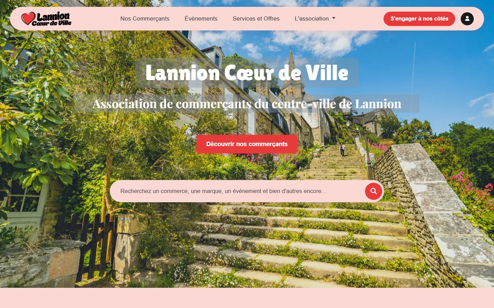
Trouver un commerce en deux clics.
Une liste de commerçants difficile à parcourir, pas d'agenda clair : l'ancien site informait sans guider. Le nouveau devait servir les visiteurs, mais aussi laisser chaque commerçant gérer sa propre fiche.
Du gris au rouge
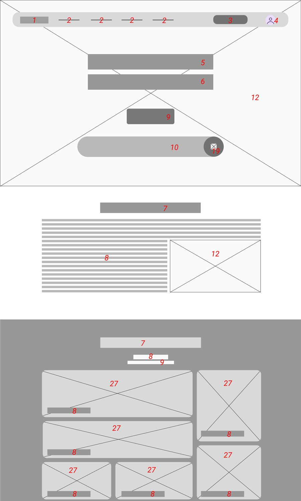
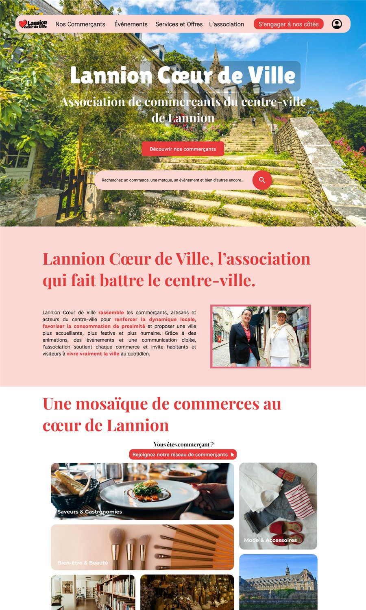
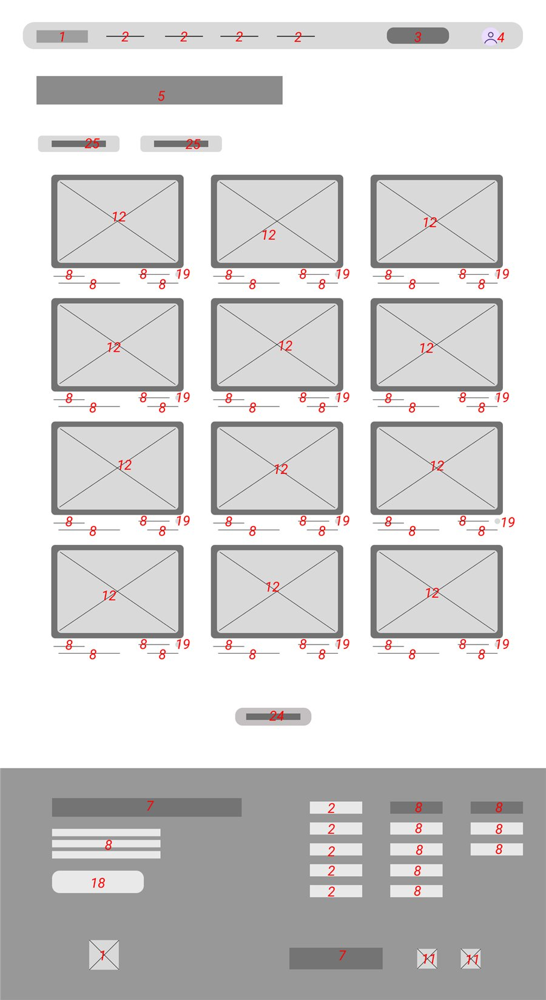
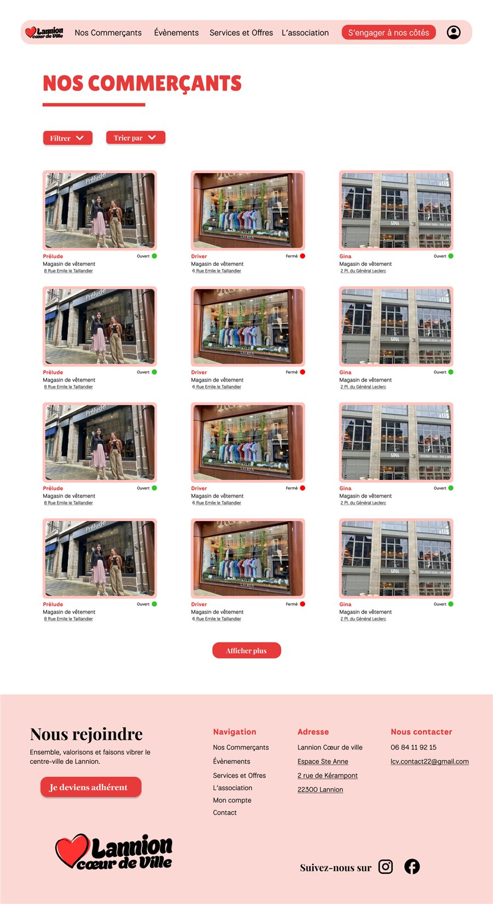
Côté visiteur
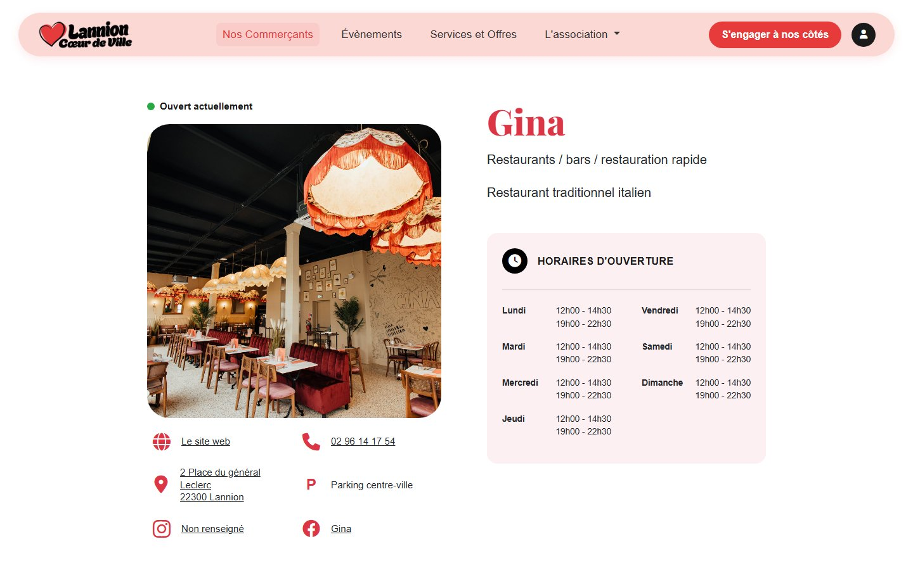
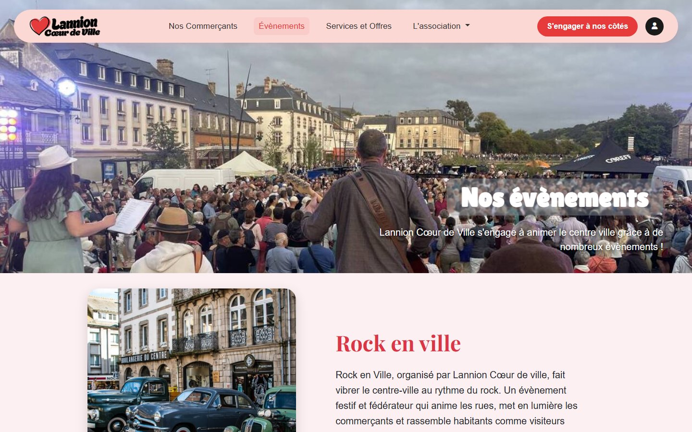
Chacun gère sa part
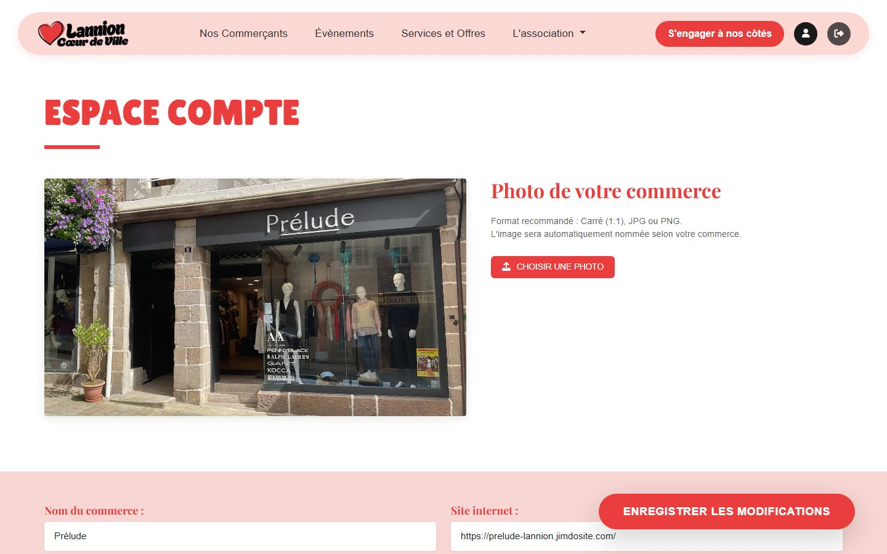
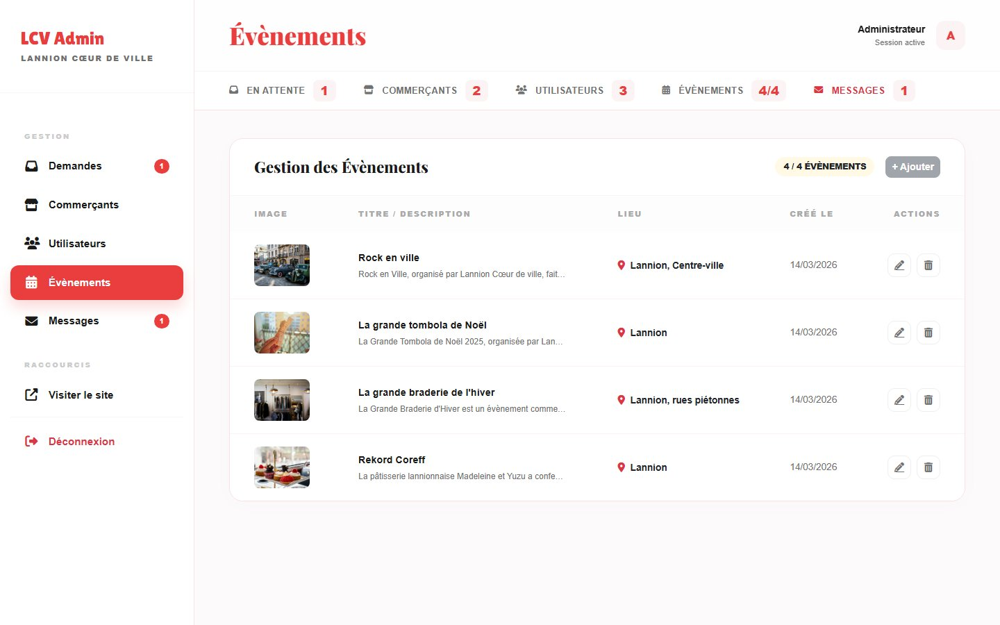
Un guide pour chaque profil
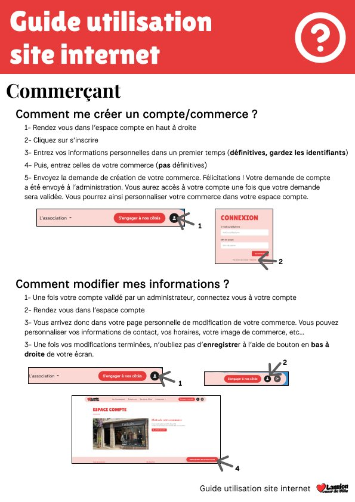
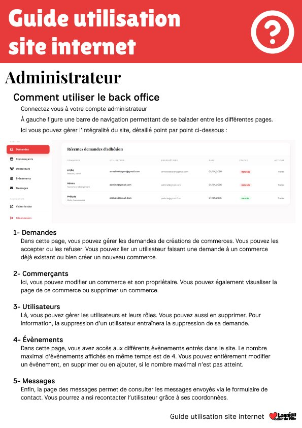
Chaque page répond à un problème relevé sur l'ancien site.
Un site d'association vit grâce à son back-office, pas seulement à sa vitrine.
Maquetter puis développer soi-même, sans perte d'intention entre les deux.